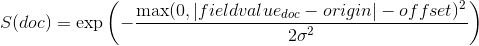

本地英文版地址: ../en/query-dsl-function-score-query.html
function_score 允许你修改查询检索到的文档的分数。
例如，如果一个评分函数的计算开销很大，并且它足以计算经过筛选的一组文档的分数，那么这就很有用了。
要使用 function_score，用户必须定义一个查询和一个或多个函数，这些函数为查询返回的每个文档计算一个新分数。
function_score 只能用于一个函数，如下所示：
GET /_search
{
"query": {
"function_score": {
"query": { "match_all": {} },
"boost": "5",
"random_score": {},
"boost_mode":"multiply"
}
}
}
|
受支持的函数列表请参考 函数评分。 |
此外，几个功能可以组合。在这种情况下，我们可以选择只在文档匹配指定的 filter 查询时应用该函数。
GET /_search
{
"query": {
"function_score": {
"query": { "match_all": {} },
"boost": "5",
"functions": [
{
"filter": { "match": { "test": "bar" } },
"random_score": {},
"weight": 23
},
{
"filter": { "match": { "test": "cat" } },
"weight": 42
}
],
"max_boost": 42,
"score_mode": "max",
"boost_mode": "multiply",
"min_score" : 42
}
}
}
|
整个查询的提高(boost)。 |
|
|
受支持的函数列表请参考 函数评分。 |
每个函数的 filter 查询产生的分数并不重要。
如果函数中没有给出任何 filter，这相当于指定 "match_all": {}。
首先，每个文档由定义的函数评分。
参数 score_mode 指定如何组合计算出的分数：
|
|
分数相乘（默认） |
|
|
分数相加，求和 |
|
|
分数的平均值 |
|
|
应用第一个具有匹配 filter 的函数 |
|
|
取分数最大值 |
|
|
取分数最小值 |
因为分数可以在不同的范围内(例如，衰减函数(decay function)在0到1之间，而 field_value_factor 是任意的)，而且有时函数对分数的不同影响是可取的，所以可以使用用户定义的 weight(权重) 来调整每个函数的分数。
weight可以在 functions数组(上面的例子)中按每个函数定义，并与相应函数计算的分数相乘。
如果给定 weight 时没有任何其他函数声明，weight 就会作为一个函数返回weight 。
如果 score_mode 被设置为 avg，则单个分数将被 weighted(加权) 平均。
例如，如果两个函数返回 1 和 2 分，它们各自的权重分别为 3 和 4，那么它们的得分将合并为 (1*3+2*4)/(3+4) 而不是 (1*3+2*4)/2。
通过设置 max_boost 参数，可以限制新的分数不超过某个限制。
max_boost 的默认值是 FLT_MAX。
新计算的分数与查询的分数相结合。 参数 boost_mode 定义了如何操作：
|
|
查询分数和函数分数相乘（默认） |
|
|
只使用函数分数，而忽略查询分数 |
|
|
查询分数和函数分数相加 |
|
|
平均值 |
|
|
查询分数和函数分数的最大值 |
|
|
查询分数和函数分数的最小值 |
默认情况下，修改分数不会改变匹配的文档。
要排除不满足某个分数阈值的文档，可以将参数 min_score 设置为所需的分数阈值。
要让 min_score 起作用，需要对查询返回的所有文档进行评分，然后逐一过滤掉。
-
script_score -
weight -
random_score -
field_value_factor -
衰减函数 (decay function):
gauss,linear,exp
script_score 函数允许包裹另一个查询，并使用脚本表达式使用从文档中的其他 数值(numeric) 字段值派生的计算定制该查询的评分。
这里是一个简单的例子:
GET /_search
{
"query": {
"function_score": {
"query": {
"match": { "message": "elasticsearch" }
},
"script_score" : {
"script" : {
"source": "Math.log(2 + doc['likes'].value)"
}
}
}
}
}
在 Elasticsearch 中，所有文档的评分都是一个 32 位的浮点数。
如果 script_score 函数生成了一个精度更高的分数，那么它将被转换为最接近的 32 位浮点数。
同样，分数必须是非负的。 否则，Elasticsearch 返回一个错误。
在不同的脚本字段值和表达式之上，可以使用 _score 脚本参数根据包裹的查询来检索分数。
脚本编译被缓存以更快地执行。
如果脚本有需要考虑的参数，最好重用同一个脚本，并为其提供 params(参数):
GET /_search
{
"query": {
"function_score": {
"query": {
"match": { "message": "elasticsearch" }
},
"script_score" : {
"script" : {
"params": {
"a": 5,
"b": 1.2
},
"source": "params.a / Math.pow(params.b, doc['likes'].value)"
}
}
}
}
}
请注意，与 custom_score 查询不同，查询的分数会乘以脚本评分的结果。
如果你希望禁止这种情况，请设置 "boost_mode": "replace"。
weight 分数允许你将分数乘以指定的 weight 值。
这有时是需要的，因为在特定查询上设置的 boost(提升)值 被归一化了，而对于这个评分函数却没有。
number 值的类型是 float。
"weight" : number
random_score 生成从 0 到 1 (不包括1) 均匀分布的分数。
默认情况下，它使用内部 Lucene 文档 id 作为随机数种子(seed)，这非常有效，但不幸的是不可再现的，因为文档可能会被合并而重新编号。
如果你希望分数是可再现的，可以提供一个 seed(种子) 和 field(字段)。
然后，将基于该种子、所考虑文档的 field(字段) 的最小值以及基于索引名称和分片id计算的 盐(salt) 来计算最终得分，以便具有相同值但存储在不同索引中的文档获得不同的得分。
请注意，在同一个分片中并且具有相同 field 值的文档将获得相同的分数，因此通常希望对所有文档使用具有唯一值的字段。
一个好的默认选择可能是使用 _seq_no 字段，其唯一的缺点是如果文档被更新，分数将会改变，因为更新操作也会更新 _seq_no 字段的值。
可以在不设置字段的情况下设置种子，但这已被废弃，因为这需要在 _id 字段上加载 fielddata(字段的数据)，这会消耗大量内存。
GET /_search
{
"query": {
"function_score": {
"random_score": {
"seed": 10,
"field": "_seq_no"
}
}
}
}
field_value_factor 函数允许你使用文档中的字段来影响分数。
它类似于使用 script_score 函数，但是它避免了脚本的开销。
如果用于 多值(multi-valued) 字段，则计算中仅使用字段的第一个值。
例如，假设你有一个用数字 likes 字段索引的文档，并希望用该字段影响文档的评分，以下就是一个示例：
GET /_search
{
"query": {
"function_score": {
"field_value_factor": {
"field": "likes",
"factor": 1.2,
"modifier": "sqrt",
"missing": 1
}
}
}
}
上面的代码将转化为以下评分公式：
sqrt(1.2 * doc['likes'].value)
函数 field_value_factor 有多个选项：
|
|
要从文档中提取的字段。 |
|
|
与字段值相乘的可选因子，默认值为 |
|
|
应用于字段值的修饰符，可以是下列值之一： |
| 修饰符 | 意义 |
|---|---|
|
不要对字段值应用任何乘数 |
|
取字段值的常用对数(common logarithm) 。
由于该函数用于 0 到 1 之间的值时会返回负值，这会导致错误，所以建议使用 |
|
将字段值加 1，取常用对数 |
|
将字段值加 2，取常用对数 |
|
取字段值的自然对数(natural logarithm)。
由于该函数用于 0 到 1 之间的值时会返回负值，这会导致错误，因此建议使用 |
|
将字段值加 1，取自然对数 |
|
将字段值加 2，取自然对数 |
|
字段值的平方(乘以它本身) |
|
取字段值的 平方根(square root) |
|
字段值的倒数(reciprocate) ，与 |
-
missing - 文档没有该字段时使用的值。 修饰符和因子仍然应用于它，就好像它是从文档中读取的一样。
field_value_score 函数生成的分数值必须是非负的，否则将会引起错误。
如果 log 和 ln 修饰符用于 0 到 1 之间的值，将产生负值。
确保使用范围过滤器限制字段的值以避免这种情况，或者使用 log1p 和 ln1p。
请记住，取 0 的 log() 或 负数的平方根是非法操作，将会引发异常。
确保使用范围过滤器限制字段的值以避免这种情况，或者使用 log1p 和 ln1p。
衰减函数(decay functions) 使用根据文档的数值字段值与用户给定原点的距离衰减的函数对文档进行评分。 这类似于 范围查询(range query)，但是使用平滑的边缘而不是方框。
要对具有数值字段的查询使用距离评分，用户必须为每个字段定义 origin (原点)和 scale(范围)。
需要使用 origin (原点) 来定义计算距离的“中心点”，使用 scale(范围) 来定义衰减率。
衰减函数可以这样定义：
"DECAY_FUNCTION": {
"FIELD_NAME": {
"origin": "11, 12",
"scale": "2km",
"offset": "0km",
"decay": 0.33
}
}
在上面的例子中，字段是 geo_point 类型，origin 可以以 geo 格式提供。
在这种情况下，scale 和 offset 必须使用上例中的单位。
如果你的字段是 date 类型，可以将 scale 和 offset 设置为天(d)、周(w)等。
示例：
GET /_search
{
"query": {
"function_score": {
"gauss": {
"date": {
"origin": "2013-09-17",
"scale": "10d",
"offset": "5d",
"decay" : 0.5
}
}
}
}
}
|
origin 的日期格式取决于 mapping 中定义的 |
|
|
参数 |
|
|
用于计算距离的原点。
对于 numeric 字段，必须以数字形式给出；对于 date 字段，必须以日期形式给出；对于 geo 段，必须以地理点形式给出。
对于 geo 和 numeric 字段是必需的。
对于 date 字段，默认值为 |
|
|
所有类型都需要。
定义从 origin + offset 的距离，在该距离处计算的分数将等于参数 |
|
|
如果定义了 |
|
|
参数 |
In the first example, your documents might represents hotels and contain a geo location field. You want to compute a decay function depending on how far the hotel is from a given location. You might not immediately see what scale to choose for the gauss function, but you can say something like: "At a distance of 2km from the desired location, the score should be reduced to one third." The parameter "scale" will then be adjusted automatically to assure that the score function computes a score of 0.33 for hotels that are 2km away from the desired location.
In the second example, documents with a field value between 2013-09-12 and 2013-09-22 would get a weight of 1.0 and documents which are 15 days from that date a weight of 0.5.
Supported decay functionsedit
The DECAY_FUNCTION determines the shape of the decay:
-
gauss -
Normal decay, computed as:

where is computed to assure that the score takes the value
decayat distancescalefromorigin+-offset
See Normal decay, keyword
gaussfor graphs demonstrating the curve generated by thegaussfunction. -
exp -
Exponential decay, computed as:

where again the parameter
 is computed to assure that the score takes the value
is computed to assure that the score takes the value decayat distancescalefromorigin+-offset
See Exponential decay, keyword
expfor graphs demonstrating the curve generated by theexpfunction. -
linear -
Linear decay, computed as:
 .
.where again the parameter
sis computed to assure that the score takes the valuedecayat distancescalefromorigin+-offset
In contrast to the normal and exponential decay, this function actually sets the score to 0 if the field value exceeds twice the user given scale value.
For single functions the three decay functions together with their parameters can be visualized like this (the field in this example called "age"):

Multi-values fieldsedit
If a field used for computing the decay contains multiple values, per default the value closest to the origin is chosen for determining the distance.
This can be changed by setting multi_value_mode.
|
|
Distance is the minimum distance |
|
|
Distance is the maximum distance |
|
|
Distance is the average distance |
|
|
Distance is the sum of all distances |
Example:
"DECAY_FUNCTION": {
"FIELD_NAME": {
"origin": ...,
"scale": ...
},
"multi_value_mode": "avg"
}
Detailed exampleedit
Suppose you are searching for a hotel in a certain town. Your budget is limited. Also, you would like the hotel to be close to the town center, so the farther the hotel is from the desired location the less likely you are to check in.
You would like the query results that match your criterion (for example, "hotel, Nancy, non-smoker") to be scored with respect to distance to the town center and also the price.
Intuitively, you would like to define the town center as the origin and
maybe you are willing to walk 2km to the town center from the hotel.
In this case your origin for the location field is the town center
and the scale is ~2km.
If your budget is low, you would probably prefer something cheap above something expensive. For the price field, the origin would be 0 Euros and the scale depends on how much you are willing to pay, for example 20 Euros.
In this example, the fields might be called "price" for the price of the hotel and "location" for the coordinates of this hotel.
The function for price in this case would be
and for location:
Suppose you want to multiply these two functions on the original score, the request would look like this:
GET /_search
{
"query": {
"function_score": {
"functions": [
{
"gauss": {
"price": {
"origin": "0",
"scale": "20"
}
}
},
{
"gauss": {
"location": {
"origin": "11, 12",
"scale": "2km"
}
}
}
],
"query": {
"match": {
"properties": "balcony"
}
},
"score_mode": "multiply"
}
}
}
Next, we show how the computed score looks like for each of the three possible decay functions.
Normal decay, keyword gaussedit
When choosing gauss as the decay function in the above example, the
contour and surface plot of the multiplier looks like this:


Suppose your original search results matches three hotels :
- "Backback Nap"
- "Drink n Drive"
- "BnB Bellevue".
"Drink n Drive" is pretty far from your defined location (nearly 2 km) and is not too cheap (about 13 Euros) so it gets a low factor a factor of 0.56. "BnB Bellevue" and "Backback Nap" are both pretty close to the defined location but "BnB Bellevue" is cheaper, so it gets a multiplier of 0.86 whereas "Backpack Nap" gets a value of 0.66.
Exponential decay, keyword expedit
When choosing exp as the decay function in the above example, the
contour and surface plot of the multiplier looks like this:

Linear decay, keyword linearedit
When choosing linear as the decay function in the above example, the
contour and surface plot of the multiplier looks like this:

Supported fields for decay functionsedit
Only numeric, date, and geo-point fields are supported.
What if a field is missing?edit
If the numeric field is missing in the document, the function will return 1.